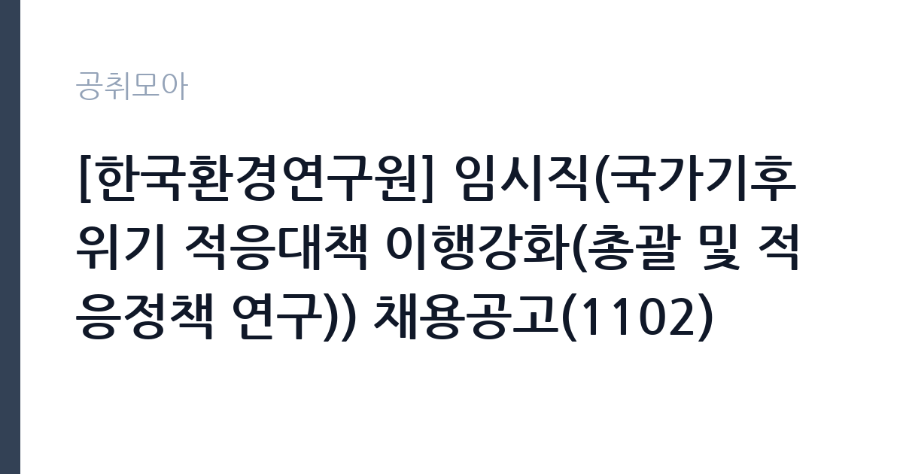

[공공기관] [한국환경연구원] 임시직(국가기후위기 적응대책 이행강화(총괄 및 적응정책 연구)) 채용공고(1102)
한국환경연구원 · 세종 · 마감 2026-11-17 (D-15) · 출처 잡알리오

한눈에 보는 모집 조건
| 기관 | 한국환경연구원 |
|---|---|
| 공고명 | [한국환경연구원] 임시직(국가기후위기 적응대책 이행강화(총괄 및 적응정책 연구)) 채용공고(1102) |
| 고용형태 | 기간제 |
| 근무지 | 세종 |
| 게시일 | 2026-11-02 |
| 마감일 | 2026-11-17 (D-15) |
지원자격, 이렇게 읽으세요
- 해당 분야 석사 학위 소지자
기간제 근로자는 근로계약 기간이 정해진 신분입니다. 계약 기간과 갱신 가능 여부가 근로계약서에 명시되며 기간 만료 시 근로관계가 종료됩니다. 결원 보충이나 특정 사업 기간에 맞춰 채용되는 경우가 많아 업무 범위가 명확합니다. 이번 공고는 한국환경연구원이 직접 진행하는 자체 전형입니다. 기상 지원 직무는 관련 전공이나 기상기사 자격을 우대하는 경우가 많습니다. 공무직 채용은 학력·경력 제한이 없는 대신 실제 근무 가능성과 교대 근무 수용 여부를 봅니다. 컴퓨터 활용과 문서 작성 능력은 기본으로 요구됩니다. 근무지가 공항이나 지방청 소재지이므로 통근 가능성을 확인해야 하고, 보안 서약과 신원조회 절차가 따릅니다. 응시 자격 판단이 애매하면 접수 전에 채용 담당 부서로 문의하는 편이 안전합니다. 자격증은 유효 기간과 등록 상태를 확인해야 합니다. 갱신이 필요한 자격이라면 갱신 여부를 먼저 점검하십시오. 이 공고 원문에 적힌 응시 조건 문구는 '해당 분야 석사 학위 소지자'입니다. 문구를 그대로 읽고 본인 해당 여부를 하나씩 표시해 두면 서류 단계에서 탈락하는 일을 줄일 수 있습니다.
이 공고의 포인트
이 건은 한국환경연구원이 같은 시기에 낸 2개 모집분야 가운데 기상 지원 직무입니다. 다른 직무 공고와 요건이 다르므로 지원 전에 모집분야 표를 대조해야 합니다. 이 공고의 첫 번째 포인트는 고용 형태입니다. 계약 기간이 정해져 있어 근무 종료 시점이 명확합니다. 그만큼 짧은 기간에 어떤 실적을 남길지가 중요해집니다. 두 번째는 업무 범위가 명확하다는 점입니다. 기상 지원 직무로 채용되므로 배치 이후 담당 업무가 크게 흔들리지 않습니다. 세 번째는 근무지입니다. 세종 지역 근무로 수도권 공고에 비해 지원자 분포가 넓지 않아 상대적으로 경쟁이 분산되는 경우가 있습니다. 자격 요건이 까다롭지 않은 대신 지원자가 몰리는 유형의 공고입니다. 선발 인원은 공고문에 명시되어 있으니 모집분야 항목을 함께 확인하십시오.
전형은 어떻게 진행되나
채용 절차는 공고문에 안내된 순서대로 진행되며, 서류 접수 마감 후에는 추가 접수나 서류 보완이 이뤄지지 않는 것이 원칙입니다. 서류심사에서는 응시자격과 제출서류의 형식 요건을 기계적으로 확인하므로, 경력 증명서의 기간과 직무 내용이 공고의 요건과 정확히 맞아야 합니다. 면접은 지원자 수에 따라 집단면접과 개별면접으로 나뉘고, 직무 관련 질문과 상황 대응 질문이 함께 나옵니다. 합격자 발표는 개별 통보 또는 홈페이지 게시로 이뤄지며 이후 임용 절차가 진행됩니다. 온라인 접수는 마감 시각이 분 단위로 정해지므로 시스템 시간을 기준으로 판단해야 합니다.
원문에서 확인한 전형 방식
해당 분야 석사 학위 소지자 병역법 제76조에서 정한 병역의무 불이행 사실이 없는 자 국가공무원법 제33조에 의한 결격사유가 없는 자
이런 분께 추천해요
- 기상·기후 관련 전공이나 자격을 갖춘 분
- 정확한 기록과 보고 체계를 지킬 수 있는 분
- 교대·야간 근무가 가능한 분
지원 전 체크리스트
- 응시자격 요건과 경력 기준을 충족하는가 — 경력은 증명서로 입증해야 합니다
- 계약 기간과 근무 시작일·종료일을 확인했는가
- 제출서류 목록을 모두 준비했는가 — 누락 시 서류 단계에서 탈락합니다
- 접수 마감 2026-11-17 이전에 접수 방식을 확인해 제출했는가
모집 일정과 제출 타이밍
접수 마감은 2026-11-17이고 공고는 2026-11-02에 게시되었습니다. 준비 기간 15일 안에 서류 작성, 증빙 발급, 접수를 모두 마쳐야 하므로 주말을 포함해 일정을 미리 나누는 것이 좋습니다. 특히 경력 기술서나 직무수행계획서를 요구하는 공고는 작성에 시간이 걸리므로 첫날 초안을 잡으십시오. 서류 합격자 발표와 면접 사이 간격이 짧은 경우가 많아 면접 예상 질문은 서류 제출 전에 정리해 두는 편이 유리합니다. 마감 직전에는 접속이 몰리므로 여유를 두고 제출하십시오. 접수 첫날에 몰리면 시스템 접속이 지연될 수 있으므로 오전 시간대 제출이 안전합니다.
직무 이해하기: 공공기관
연구·교육 지원 기관은 정책 연구와 조사 분석, 교육 프로그램 운영을 담당합니다. 과제 기반으로 인력을 채용하는 경우가 많아 계약 기간과 성과 목표가 명확히 정해집니다. 보고서와 연구 성과물의 품질 기준이 높습니다. 기상 지원 업무는 관측 자료와 예보 정보를 정리해 수요 부서에 전달하는 일입니다. 항공기상 분야는 항공기 이착륙에 필요한 기상 정보를 확인하고 조종사와 운항 부서에 브리핑 자료를 제공합니다. 관측 장비의 작동 상태를 점검하고 이상이 있으면 보수를 요청하며, 일일 관측 기록과 통계를 정리합니다. 24시간 운영 체계에 맞춰 교대 근무가 포함될 수 있고, 기상 특보 상황에서는 업무량이 크게 늘어납니다. 공무직 근로자는 기관 임금표와 복무 규정을 적용받습니다. 이 직무는 담당 구역이 정해져 있어 근무지에 따라 실제 업무 환경이 달라집니다. 업무 매뉴얼과 지침이 문서로 정리되어 있어 절차를 익히면 반복 업무는 빠르게 손에 붙습니다. 이 건의 근무 대상 지역·부서는 원문 기준 '국가기후위기 적응대책 이행강화(총괄 및 적응정책 연구'입니다.
자기소개서 작성 팁
지원서는 데이터를 다룬 경험과 정확성을 중심으로 쓰십시오. 관측·통계 자료를 정리한 경험, 오류를 발견해 수정한 사례가 소재가 됩니다. 교대 근무가 가능하다는 점과 야간·휴일 근무에 대한 계획을 분명히 밝히십시오. 기관의 업무 특성을 조사해 어떤 부서에서 기여할 수 있는지 구체적으로 쓰면 좋습니다. 문항별 글자 수 제한을 먼저 확인하고, 각 문항의 첫 문장에 결론을 배치하는 방식이 읽기 쉽습니다. 지원 동기는 기관의 어떤 사업에 기여하겠다는 한 문장으로 시작하고, 이어서 본인의 경험을 근거로 붙이십시오. 감점을 피하려면 다른 기관에 보낼 수 있는 범용 문장을 그대로 쓰지 않는 것이 중요합니다. 기관 이름과 사업명이 문장 안에 자연스럽게 들어가야 준비도가 드러납니다.
면접 준비 포인트
면접에서는 자료 해석의 정확성과 교대 근무 적응을 확인합니다. 관측 값이 이상할 때 어떤 순서로 확인하는지, 특보 상황에서 우선 처리해야 할 업무가 무엇인지 묻습니다. 보고 체계를 지키는 태도와 기록의 정확성을 강조하십시오. 장비 고장 시 대응 절차도 질문 대상입니다. 모르는 질문에 추측으로 답하면 감점 요인이 되므로, 확인 후 답하겠다고 밝히는 편이 안전합니다. 마지막 질문 시간에는 근무 조건에 대한 확인 사항을 한 가지 정도 준비해 가면 성실성이 드러납니다.
급여·근무조건 읽는 법
알리오(공공기관 경영정보 공개시스템) 2025년 결산 경영공시 기준으로 한국환경연구원 일반정규직 1인당 평균보수액은 8,516만원, 공시된 신입사원 초임은 4,083만원입니다. 평균보수액은 기본급에 고정수당·실적수당·성과상여금·급여성 복리후생비를 모두 합산한 값이라 월 기본급만 보고 판단하면 실제와 크게 어긋납니다. 이번 공고는 기간제 채용이라 위 정규직 평균보수는 그대로 적용되지 않습니다. 기간제 보수는 기관의 기간제 임금 기준을 따르며 계약 기간이 함께 정해집니다. 공무직 근로자는 기관 임금표의 기본급에 정액급식비와 명절휴가비, 초과근무수당이 더해지는 구조입니다. 교대 근무가 포함되면 야간·휴일 근무수당이 붙어 실수령액이 달라집니다. 2026년 적용 최저임금은 시급 10,320원, 월 환산 2,156,880원(주 40시간·209시간 기준)입니다. 고용노동부 고시 제2025-47호로 확정된 금액입니다. 공고문에 금액이 제시되지 않은 항목은 원문 보수표나 처우 설명에서 확인해야 하며 확인되지 않은 수치는 쓰지 않는 것이 원칙입니다. 비교할 때는 월 급여뿐 아니라 상여·명절휴가비·복지포인트·초과근무수당까지 포함한 연간 총액으로 계산하십시오. 기간제라면 계약 기간 동안의 총액을, 무기계약이라면 호봉 상승과 정년까지의 누적 소득을 기준으로 판단하는 편이 정확합니다.
자주 묻는 질문
- 선발 인원은 몇 명인가요?
공고문의 모집분야 항목에 직종별 인원이 표로 제시되어 있습니다. 첨부된 공고문 원문에서 확인하십시오. - 근무지는 어디인가요?
세종 지역의 한국환경연구원 소속 근무지입니다. 세부 주소와 출퇴근 조건은 원문 공고문에서 확인할 수 있습니다. - 보수는 얼마인가요?
채용 신분(기간제)과 기관 임금 규정에 따라 정해지며 구체적인 금액은 공고문 처우 항목에 제시됩니다. 금액이 공개되지 않은 경우에는 원문의 보수표를 확인하십시오.
함께 보면 좋은 공고
[공공기관] 2026년 한국특허정보원 체험형 청년인턴 채용 — 마감 2026-11-18[공공기관] 한국폴리텍대학 진주캠퍼스 행정지원직(사무직원 휴직 대체인력) 채용 공고 — 마감 2026-11-10[공공기관] 대구경북첨단의료산업진흥재단 2026년 3차 정원외 계약직원 채용공 — 마감 2026-11-17출처: 잡알리오 공개정보를 바탕으로 공취모아가 정리한 안내글입니다. 모집 조건·일정은 변경될 수 있으니 지원 전 반드시 원문 공고문을 확인하세요. 본 글은 정보 제공용이며 합격을 보장하지 않습니다.